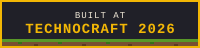

Brand sources
Sampled from satim.dz and the SATIM logo. Red is a signature, not a UI color.
#E2211C#1D1D1B#323232#F8F8F8#005B94Severity
Icon + label + color, always. Only for anomalies. Unacknowledged critical icons beat; everything else is still.
Data colors
Payment channels keep the same color in every chart, legend and filter.
Typography
Network overview
Buttons
KPI cards
Max four on the overview. The delta is colored only when it is an anomaly.
Priority queue
Ranked 1-2-3. Left border = severity. Whole row is clickable.
Explanation card
Plain language, observed vs reference, reasons, action. Technical detail is hidden in a disclosure.
MER-7175 · Tue 14 Oct 2026
Transactions fell to 12, against a usual 41 for a Tuesday (−71 %).
| Indicator | Observed | Usual |
|---|---|---|
| Transactions | 12 | 41 |
| Value | 54 180 DZD | 186 900 DZD |
| Rejection rate | 2 % | 3 % |
- No TPE / POS activity after 11:00 (usually 60 % of volume)
- Online payments stayed normal
How was this computed?
“Usual” = median of the same weekday over the previous 4 weeks. Score 0.87 (higher = more unusual).Motion
Every user action and system event has its own animation, with a live demo, in the motion catalogue.
Wording
Operational anomalies, never fraud.
| Fraud alert | → Anomaly alert |
| Suspicious merchant | → Merchant with unusual activity |
| z-score = 4.2 | → About 4× more than usual |
| Isolation Forest outlier | → Very different from this merchant's history |
Branding & TechnoCraft touch
Sidebar footer: SATIM logo, then the TechnoCraft badge. The badge's gold never enters the dashboard.
